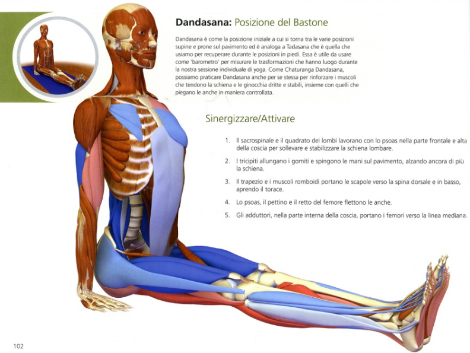
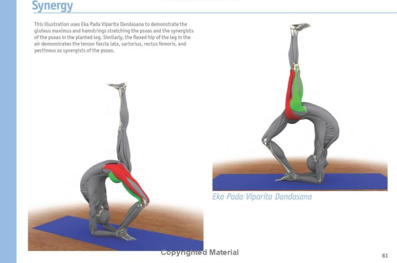
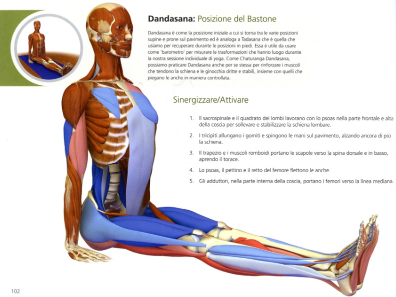
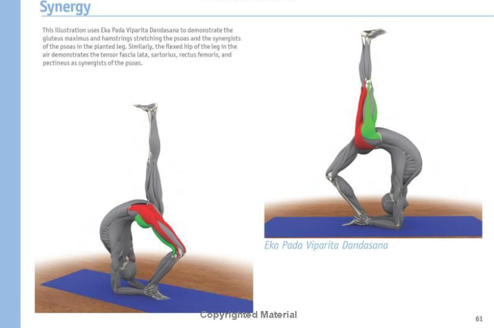
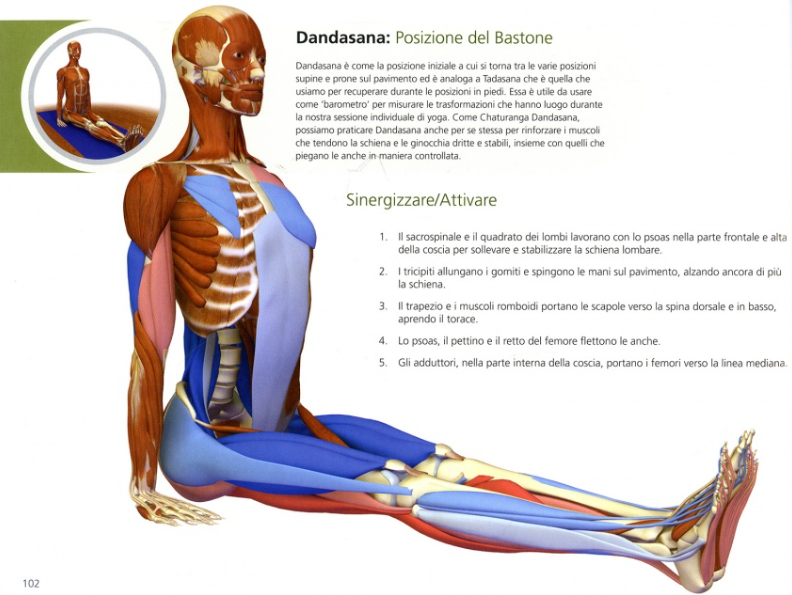
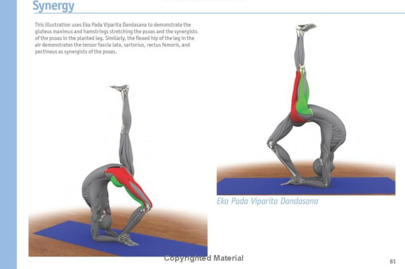
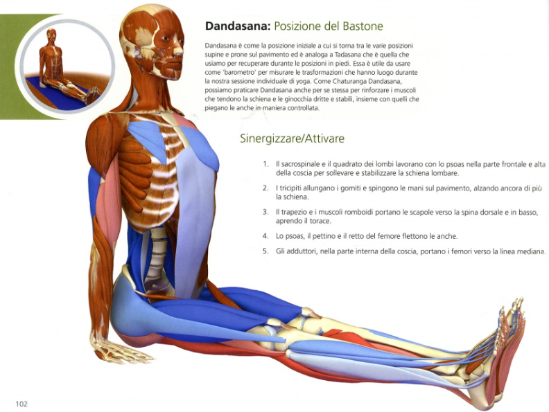
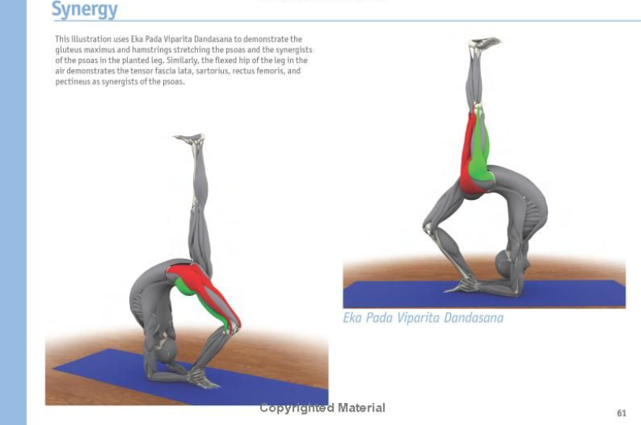

This is the second volume in the Scientific Keys Series from Bandha Yoga. The Key Poses of Hatha Yoga by Ray Long MD FRCSC is a learning tool for fully understanding the muscular anatomy of Hatha Yoga and integrating this knowledge with experience of the poses. Synergistic muscles that contract during a posture are clearly shown in varying shades of blue based on how strong their action is during the pose. Antagonistic muscles which relax during the posture are shown in varying shades of red. In the text Dr. Long suggests we use a particular muscle as a focus during practice so that naming it and feeling its action become integrated in our consciousness. Fifty-five poses are illustrated and described in this way with numerous insets detailing important aspects of the musculoskeletal system in the poses. Also included are sections on the biomechanics of stretching, physiology of stretching and muscle awakening. In all there are over 400 stunning full color illustrataions of the science of yoga with detailed explanations. This book is spiral bound for ease of study and use during practice. It is a fantastic resource for any serious yoga student. Ray Long, MD FRCSC, is a board-certified orthopedic surgeon and the founder of Bandha Yoga. He graduated from The University of Michigan Medical School with postgraduate training at Cornell University, McGill University, The University of Montreal, and Florida Orthopedic Institute.
Reference Health Nonfiction Textbooks Spirituality Science